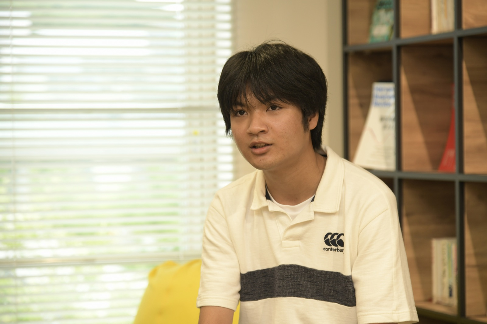

ABOUT
本屋敷 健太 / Kenta Motoyashiki

九州大学 図書館書架にて
九州大学理学部生物学科にて数理生物学を専攻（学士:理学、副専攻:人文学）し、九州大学大学院 芸術工学府 未来共生デザインコースにて修士（芸術工学）を修了。2026年4月より東京にて会社員として勤務しています。
ヒトの心理や感情の進化的維持メカニズムに関する数理研究のほか、科学コミュニケーションや一般・学校向けの講演、ドラム演奏、日本文化の探求などに取り組んでいます。
ヒトの心理や感情の進化的維持メカニズムに関する数理研究のほか、科学コミュニケーションや一般・学校向けの講演、ドラム演奏、日本文化の探求などに取り組んでいます。
DEGREES 学位
CERTIFICATIONS & TEACHING 資格・教育指導歴
保有資格・免許
- 中学校・高等学校教諭一種免許状（理科）
- 宗教文化士（日本宗教文化史学会）
- ディープラーニング G検定（JDLA）
理科教育指導
- 2024年: 理科指導（1年間）
- 2025.10 – 2026.03: 理科指導
HONORS & AWARDS 受賞歴
- 2023.02 九州大学チャレンジ&クリエイション (C&C) 総長賞 優秀賞
- 2022.02 九州大学チャレンジ&クリエイション (C&C) 総長賞 最優秀賞
- 2021 iGEM Competition 2021 Silver Medal（合成生物学世界大会 銀賞）
- 2019 日本生物学オリンピック 本選 銅賞
CHRONOLOGY 略歴
-
2026.04 –
都内企業にて勤務開始（東京在住）
-
2026.03
九州大学大学院 芸術工学府 未来共生デザインコース 修了 修士（芸術工学）
-
2024.04
九州大学大学院 芸術工学府 未来共生デザインコース 入学
-
2024.03
九州大学 理学部 生物学科 卒業 学士（理学）・副専攻（人文学）修得 / 数理生物学研究室
-
2020.04
九州大学 理学部 生物学科 入学
-
2020.03
修道高等学校 卒業
-
2001
広島県にて出生